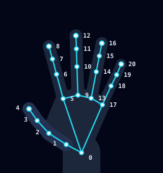

JestKontrol tasarım sistemi
CustomTkinter ile birebir uygulanabilir: düz renkler, yuvarlak köşeler ve standart bileşenler. Tüm değerler design/tokens.json dosyasında; Python tarafı aynı dosyayı okur.
Koyu tema (varsayılan)
bg
#0F172A
nav
#0B1222
card
#1B2336
muted
#272F42
border
#334155
field_border
#64748B
text
#F8FAFC
text_muted
#94A3B8
primary
#22D3EE
success
#22C55E
warning
#FBBF24
danger
#F87171
Açık tema
bg
#F1F5F9
nav
#F8FAFC
card
#FFFFFF
muted
#E2E8F0
border
#CBD5E1
field_border
#7C8BA1
text
#0F172A
text_muted
#475569
primary
#0E7490
success
#15803D
warning
#B45309
danger
#B91C1C
Kamera görüntüsü
İki temada da aynı; PIL ile kareye çizilir.
viewport
#020617
skeleton
#22D3EE
highlight
#FBBF24
skeleton_paused
#64748B
Tüm metin çiftleri ≥ 4.5:1, bileşen kenarları ≥ 3:1 kontrastta ölçüldü.
Yazı
Segoe UI · simgeler Segoe Fluent Icons
Kontrol PaneliSayfa başlığı · 24 Semibold
Kamera önizlemesiKart başlığı · 16 Semibold
Değişiklikler hemen uygulanır.Gövde · 14 Regular
Çalışma moduEtiket · 12 Semibold
her 0,5 sn güncellenirAçıklama · 12 Regular
29,4Değer · 22 Semibold
Ctrl+Alt+GKısayol · Cascadia Mono 12
Türkçe arayüzde ondalık ayırıcı virgül (29,4) ve yüzde işareti önde (%60); İngilizcede 29.4 ve 60%.
Boşluk ve köşeler
4
8
12
16
24
32
Alan · 6
Düğme · 8
Kutucuk · 10
Kart · 12
Hap · tam
Pencere 1280 × 768 (en küçük 1100 × 680) · yan menü 232 · sağ sütun 340 · menü öğesi 44 · büyük düğme 48.
Bileşenler
Her biri bir CTk bileşenine karşılık gelir
Düğmeler · CTkButton
Başlat · 48
Durdur · 48
İkincil · 48
Birincil · 40
Üzerine gelince
Odak halkası · 2 px
Pasif
Bağlantı
Seçim kontrolleri
1,2×
Durum · renk + şekil + metin
KAPALI
AKTİF
DURAKLATILDI
SÜRÜYOR
HATA
Hareket çipleri
İmleç
Sol tık
Sürükle
Ctrl+Alt+Gkısayol etiketi
Gezinme ve değer kutucuğu
FPS29,4Hedef ≥ 25
Kamera önizlemesi durumları

El noktaları
MediaPipe · 21 nokta

0 bilek · 4 başparmak · 8 işaret · 12 orta · 16 yüzük · 20 serçe (uçlar)
Hareket ve nokta eşlemesi
Taslak
| Hareket | Kimlik | Noktalar | Kural |
|---|---|---|---|
| İmleç | move | 8 | Uç konumu aktif alana göre ekrana ölçeklenir, üstel yumuşatma uygulanır |
| Sol tık | left_click | 4 ↔ 8 | Mesafe < eşik × avuç boyu (0 ↔ 9) |
| Sağ tık | right_click | 4 ↔ 12 | Mesafe < eşik × avuç boyu |
| Sürükle | drag | 4 ↔ 8 | Sol tık 0,3 sn'den uzun tutulur; ayrılınca bırakılır |
| Kaydırma | scroll | 8, 12 | İki parmak açık; dikey hareket kaydırmaya dönüşür |
| Ses | volume | 4 ↔ 8 | Mesafe aralığı ses %0–100'e eşlenir |
| Duraklat | pause | 5–20 | Tüm parmaklar kapalı, 1 sn tutulur |
Simgeler
Segoe Fluent Icons (Windows 11) · yedek: Segoe MDL2 Assets (Windows 10)
PanelE80F
ElED5F
AyarlarE713
TestE9D9
BilgiE946
BaşlatE768
DuraklatE769
DurdurE71A
MiniEE49
GenişletE740
KameraE714
FareE962
KaydırmaE8CB
SesE767
İmleçE8B0
TıkE815
SürükleE7C2
FPSEC4A
GecikmeE916
Dışa aktarEDE1